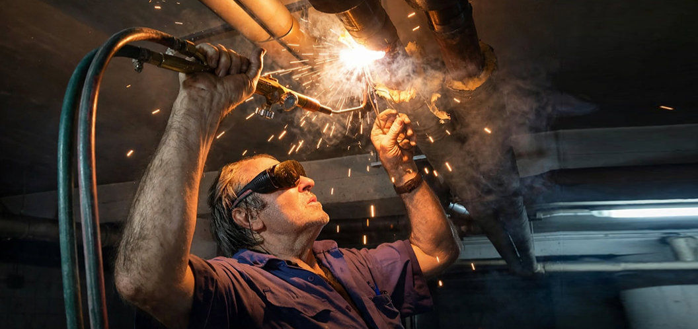

Soluciones rápidas, eficaces y garantizadas en Zaragoza
Solicitar PresupuestoReparación de averías, fugas de agua, sustitución de tuberías e instalación de grifería y sanitarios.
Instalación, mantenimiento y reparación de sistemas de calefacción, radiadores y calderas.
Servicio rápido para desatascos en tuberías, desagües y redes de agua comunitarias o privadas.
Más de 30 años de oficio realizando instalaciones y reparaciones con la máxima profesionalidad.
Trato personal, sincero y sin intermediarios para ofrecerte la mejor solución a tu problema.
Respuesta ágil ante cualquier avería de fontanería o calefacción en Zaragoza.